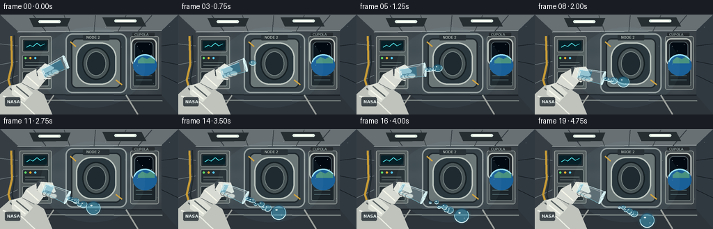
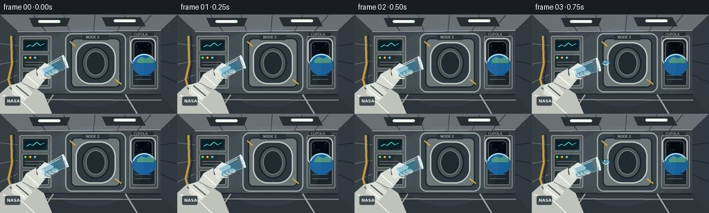

CODING AGENTS AS PIXEL WORLD MODELS
traex/GPT-5.6-Sol · phygen_001
点击播放 · 原生 RGB 像素
逐轮保存的候选
回放视频、检查图与代码变化。
每份候选均可单独播放。实际图片检查记录在下方工具轨迹中。
候选 01播放与检查图
点击播放 · 原生 RGB 像素


展开代码变化
--- 上一保存版本
+++ 本次保存版本
@@ -0,0 +1,247 @@
+from pathlib import Path
+import math, json
+import numpy as np
+from PIL import Image, ImageDraw, ImageFilter, ImageFont
+import artifact_io
+
+ROOT = Path(__file__).resolve().parent
+W, H, N = 256, 144, 20
+S = 3
+WS, HS = W*S, H*S
+
+def sc(v): return int(round(v*S))
+def pts(seq): return [(sc(x),sc(y)) for x,y in seq]
+def box(b): return tuple(sc(x) for x in b)
+
+def font(sz, bold=False):
+ path = "/usr/share/fonts/truetype/dejavu/DejaVuSans-Bold.ttf" if bold else "/usr/share/fonts/truetype/dejavu/DejaVuSans.ttf"
+ try: return ImageFont.truetype(path, sc(sz))
+ except: return ImageFont.load_default()
+
+F5, F6B, F8B = font(5), font(6, True), font(8, True)
+
+def rounded(draw, b, r, fill, outline=None, width=1):
+ draw.rounded_rectangle(box(b), radius=sc(r), fill=fill, outline=outline, width=sc(width))
+
+def line(draw, xy, fill, width=1, joint='curve'):
+ draw.line(pts(xy), fill=fill, width=sc(width), joint=joint)
+
+def ellipse(draw,b,fill,outline=None,width=1):
+ draw.ellipse(box(b),fill=fill,outline=outline,width=sc(width))
+
+def polygon(draw,xy,fill,outline=None): draw.polygon(pts(xy),fill=fill)
+
+def rotpt(x,y,cx,cy,a):
+ ca,sa=math.cos(a),math.sin(a)
+ return cx+(x-cx)*ca-(y-cy)*sa, cy+(x-cx)*sa+(y-cy)*ca
+
+def droplet_layer(base, blobs, t):
+ """Layered transparent liquid beads with caustic rims/highlights."""
+ # soft cyan halos
+ halo=Image.new('RGBA',(WS,HS),(0,0,0,0)); hd=ImageDraw.Draw(halo)
+ for x,y,r,stretch in blobs:
+ hd.ellipse((sc(x-r*1.20*stretch),sc(y-r*1.20),sc(x+r*1.20*stretch),sc(y+r*1.20)), fill=(55,189,234,38))
+ halo=halo.filter(ImageFilter.GaussianBlur(sc(2.2)))
+ base.alpha_composite(halo)
+ water=Image.new('RGBA',(WS,HS),(0,0,0,0)); d=ImageDraw.Draw(water)
+ for i,(x,y,r,stretch) in enumerate(blobs):
+ bb=(sc(x-r*stretch),sc(y-r),sc(x+r*stretch),sc(y+r))
+ # deep translucent body then inset aqua volume
+ d.ellipse(bb, fill=(33,121,166,112), outline=(170,239,255,220), width=sc(max(.7,r*.10)))
+ ins=.14*r
+ d.ellipse((sc(x-r*stretch+ins),sc(y-r+ins),sc(x+r*stretch-ins),sc(y+r-ins)), fill=(68,178,215,92))
+ # lower refraction and bright upper-left reflection
+ d.arc(bb, start=18,end=155, fill=(223,252,255,235), width=sc(max(1,r*.12)))
+ d.arc(bb, start=190,end=320, fill=(8,74,116,130), width=sc(max(1,r*.10)))
+ hr=max(1.0,r*.19)
+ d.ellipse(box((x-r*.43*stretch,y-r*.48,x-r*.43*stretch+hr*1.6,y-r*.48+hr)), fill=(241,255,255,220))
+ if r>4:
+ d.ellipse(box((x+r*.30*stretch,y+r*.28,x+r*.30*stretch+r*.16,y+r*.28+r*.12)), fill=(181,241,255,125))
+ base.alpha_composite(water)
+
+def make_background():
+ # subdued metallic radial/linear shading
+ yy,xx=np.mgrid[0:HS,0:WS]
+ x=xx/S; y=yy/S
+ vig=np.sqrt(((x-128)/155)**2+((y-70)/105)**2)
+ shade=np.clip(1-.22*vig,0.68,1)
+ ribs=3*np.sin(x*.13)+2*np.sin(y*.21)
+ arr=np.zeros((HS,WS,4),dtype=np.uint8)
+ base=np.array([72,82,88])[None,None,:]*shade[:,:,None]+ribs[:,:,None]
+ arr[:,:,:3]=np.clip(base,0,255); arr[:,:,3]=255
+ im=Image.fromarray(arr,'RGBA'); d=ImageDraw.Draw(im)
+ # ceiling vanishing toward center-right
+ polygon(d,[(0,0),(256,0),(232,23),(27,25)],(104,112,116,255))
+ polygon(d,[(0,0),(25,25),(25,115),(0,144)],(54,62,68,255))
+ polygon(d,[(256,0),(232,23),(232,116),(256,144)],(48,57,64,255))
+ polygon(d,[(0,144),(25,115),(232,116),(256,144)],(45,52,58,255))
+ # structural rails / panel seams
+ line(d,[(25,25),(232,23)],(188,195,194,210),1)
+ line(d,[(25,115),(232,116)],(28,34,39,255),2)
+ for x0 in [48,92,137,181,218]:
+ line(d,[(x0,1),(128+(x0-128)*.78,24)],(51,59,64,180),1)
+ for y0 in [42,72,99]:
+ line(d,[(0,y0),(25,54+(y0-54)*.74)],(121,132,135,120),1)
+ line(d,[(256,y0),(232,54+(y0-54)*.74)],(18,25,30,210),1)
+ # overhead panels and lamps
+ polygon(d,[(42,5),(101,5),(96,17),(48,18)],(38,45,49,255)); polygon(d,[(147,4),(203,4),(210,17),(153,17)],(39,46,50,255))
+ for b in [(55,8,87,12),(164,7,196,11)]:
+ rounded(d,b,2,(222,236,226,255)); rounded(d,(b[0]+3,b[1]+1,b[2]-3,b[3]-1),1,(250,255,243,255))
+ # rear hatch assembly
+ rounded(d,(94,27,182,113),10,(49,59,64,255),(150,158,157,255),2)
+ rounded(d,(102,34,174,106),8,(105,113,113,255),(26,33,37,255),2)
+ rounded(d,(109,40,167,101),22,(38,49,55,255),(190,196,190,255),2)
+ ellipse(d,(118,47,158,94),(68,78,79,255),(17,24,28,255),2)
+ ellipse(d,(124,53,152,88),(25,34,39,255),(124,134,132,255),1)
+ line(d,[(109,46),(101,39)],(213,161,55,255),2); line(d,[(166,94),(175,101)],(213,161,55,255),2)
+ # labels
+ rounded(d,(119,29,157,37),1,(34,41,45,255))
+ d.text((sc(124),sc(30)),"NODE 2",font=F5,fill=(225,230,221,255))
+ # left equipment racks
+ rounded(d,(28,31,74,107),2,(83,91,92,255),(154,161,158,255),1)
+ for b in [(32,35,70,54),(32,58,70,78),(32,82,70,103)]:
+ rounded(d,b,2,(36,45,49,255),(130,139,137,255),1)
+ # screens
+ rounded(d,(35,38,67,51),1,(7,31,39,255))
+ line(d,[(38,47),(43,44),(47,46),(53,41),(58,45),(64,42)],(75,217,220,255),1)
+ for bx,by,c in [(35,61,(97,224,107,255)),(42,61,(239,174,50,255)),(49,61,(86,200,239,255))]: ellipse(d,(bx,by,bx+3,by+3),c)
+ for yy0 in [69,73,88,92,96]: line(d,[(36,yy0),(64,yy0)],(105,117,117,255),1)
+ # right wall controls
+ rounded(d,(187,31,228,108),3,(70,78,81,255),(147,154,151,255),1)
+ rounded(d,(191,78,224,103),2,(27,36,41,255),(112,122,121,255),1)
+ for yy0 in [82,88,94]:
+ line(d,[(195,yy0),(218,yy0)],(77,102,106,255),1)
+ # porthole with outer space and Earth limb
+ rounded(d,(188,34,225,73),8,(31,37,41,255),(185,191,185,255),2)
+ rounded(d,(193,39,220,68),6,(2,9,17,255),(91,106,111,255),1)
+ # stars
+ for sx,sy in [(197,45),(214,43),(204,52),(217,58),(200,61)]: ellipse(d,(sx,sy,sx+.8,sy+.8),(238,248,255,255))
+ # Earth arc
+ ellipse(d,(191,58,225,88),(25,95,152,255))
+ d.arc(box((191,57,225,87)),195,330,fill=(155,225,247,255),width=sc(2))
+ polygon(d,[(198,66),(204,61),(211,64),(216,61),(222,65),(222,70),(198,70)],(73,145,127,160))
+ # conduit cables
+ line(d,[(16,31),(17,72),(12,94),(19,118)],(198,154,54,255),3)
+ line(d,[(20,30),(21,70),(17,95),(23,116)],(32,42,47,255),2)
+ # floor rails
+ line(d,[(24,123),(233,124)],(121,129,128,255),2)
+ line(d,[(58,144),(77,116)],(155,159,154,180),2); line(d,[(198,144),(181,116)],(155,159,154,180),2)
+ # little wall callout
+ rounded(d,(190,26,222,31),1,(38,44,47,255)); d.text((sc(193),sc(26)),"CUPOLA",font=F5,fill=(184,200,198,255))
+ return im
+
+BG=make_background()
+
+def render(k):
+ t=k/(N-1)
+ im=BG.copy()
+ # subtle moving reflection/light on station
+ light=Image.new('RGBA',(WS,HS),(0,0,0,0)); ld=ImageDraw.Draw(light)
+ ld.ellipse(box((55+3*math.sin(t*3),18,208,134)),fill=(153,211,220,12))
+ im.alpha_composite(light)
+
+ # astronaut torso and arm in foreground lower left
+ body=Image.new('RGBA',(WS,HS),(0,0,0,0)); d=ImageDraw.Draw(body)
+ polygon(d,[(-8,144),(-4,118),(14,102),(39,99),(63,115),(75,144)],(191,195,188,255))
+ line(d,[(4,117),(31,126),(50,144)],(235,238,228,255),2)
+ line(d,[(14,106),(30,120)],(87,94,94,255),2)
+ # sleeve bands and folds
+ polygon(d,[(17,102),(31,98),(47,113),(35,126),(17,115)],(220,223,213,255))
+ line(d,[(23,103),(41,118)],(91,99,100,255),2)
+ line(d,[(20,109),(36,122)],(246,247,237,255),2)
+ rounded(d,(7,119,29,132),2,(65,72,76,255)); d.text((sc(10),sc(122)),"NASA",font=F6B,fill=(229,237,235,255))
+ # forearm aimed toward cup
+ polygon(d,[(29,101),(38,86),(58,75),(70,88),(54,108)],(215,218,210,255))
+ line(d,[(38,88),(55,103)],(247,247,235,255),2)
+ line(d,[(32,99),(49,108)],(92,100,101,255),1)
+ # cuff
+ polygon(d,[(52,76),(64,71),(75,84),(64,94),(53,88)],(61,70,75,255))
+ line(d,[(57,76),(69,90)],(173,181,178,255),1)
+ im.alpha_composite(body)
+
+ # Cup rotation: starts slightly upright, slowly tips mouth toward right.
+ ease=(1-math.cos(math.pi*min(t/0.62,1)))/2
+ ang=math.radians(-22 + 49*ease) # local cup axis rotates clockwise visually
+ pivot=(62,86)
+ # local cup quadrilateral: bottom x=61, mouth x=98; axis rightward; opening perpendicular
+ def rp(p): return rotpt(p[0],p[1],pivot[0],pivot[1],ang)
+ # hand behind cup
+ hand=Image.new('RGBA',(WS,HS),(0,0,0,0)); hd=ImageDraw.Draw(hand)
+ # palm follows grip
+ handpoly=[rp((55,78)),rp((70,72)),rp((80,82)),rp((69,96)),rp((54,91))]
+ hd.polygon(pts(handpoly),fill=(226,229,220,255))
+ # padded fingers gripping underside
+ for j in range(3):
+ cx,cy=rp((69+j*5,90-j*.5)); ellipse(hd,(cx-6,cy-4,cx+6,cy+4),(204,208,202,255),(105,113,114,255),1)
+ line(hd,[rp((58,80)),rp((68,91))],(250,251,241,255),1)
+ im.alpha_composite(hand)
+
+ cup=Image.new('RGBA',(WS,HS),(0,0,0,0)); cd=ImageDraw.Draw(cup)
+ # cup shape in local coordinates, wider at mouth
+ corners=[rp((62,77)),rp((98,72)),rp((99,91)),rp((62,91))]
+ cd.polygon(pts(corners),fill=(189,224,232,54))
+ # remaining water level retreats toward bottom (left) as it pours
+ remain=max(.08, .88-1.08*max(0,t-.08))
+ wx=63+34*remain
+ waterpoly=[rp((63,79)),rp((wx,75.8)),rp((wx,89.2)),rp((63,90))]
+ cd.polygon(pts(waterpoly),fill=(52,156,197,115))
+ line(cd,[rp((63,79)),rp((wx,75.8))],(178,240,252,210),1)
+ # glass contours
+ line(cd,[corners[0],corners[1]],(220,246,248,230),1)
+ line(cd,[corners[3],corners[2]],(121,190,205,210),1)
+ line(cd,[corners[0],corners[3]],(202,237,240,220),1)
+ line(cd,[corners[1],corners[2]],(225,251,252,245),2)
+ # elliptical rim transformed approximated with polyline
+ rim=[]
+ for q in range(33):
+ a=2*math.pi*q/32
+ rim.append(rp((98.5+1.8*math.cos(a),81.5+10.0*math.sin(a))))
+ line(cd,rim,(224,250,252,245),1)
+ # bright specular on glass
+ line(cd,[rp((68,78)),rp((92,75))],(246,255,255,135),1)
+ line(cd,[rp((64,81)),rp((64,87))],(245,255,255,160),1)
+ im.alpha_composite(cup)
+
+ # Water emission from current mouth center, travels ballistically in zero-g.
+ mouth=np.array(rp((100.0,81.5)))
+ # direction is local +x transformed
+ q2=np.array(rp((110,81.5))); direction=(q2-mouth); direction/=np.linalg.norm(direction)
+ blobs=[]
+ # Leading main glob: releases at t=.17, grows through merging and drifts smoothly.
+ tau=max(0,(t-.14)/.86)
+ if tau>0:
+ x,y=mouth + direction*(8+63*tau) + np.array([0,-3.0*math.sin(math.pi*tau)])
+ r=3.7+6.7*min(1,tau*1.75)
+ blobs.append((x,y,r,1.02+0.28*max(0,1-tau*2.2)))
+ # intermediate pearls, each has own release; no gravity, slight divergent vectors
+ for j,(release,speed,rad,side) in enumerate([
+ (.25,47,5.0,-1),(.35,43,3.3,1),(.46,39,4.1,-1),(.58,34,2.5,1),(.68,29,3.0,-1),(.78,24,2.0,1)]):
+ age=(t-release)/(1-release)
+ if age>0:
+ pos=mouth+direction*(3+speed*age)
+ perp=np.array([-direction[1],direction[0]])
+ pos=pos+perp*(side*(1.0+j*.40)*math.sin(age*math.pi*.85))
+ blobs.append((pos[0],pos[1],rad*(.65+.35*min(age*5,1)),1.08))
+ # Stream neck while actively pouring, composed into liquid bridge
+ if .20<t<.78:
+ pour=(t-.20)/.58
+ for j in range(3):
+ p=mouth+direction*(2.5+j*4.2)
+ blobs.append((p[0],p[1],2.9-j*.35,1.35))
+ droplet_layer(im,blobs,t)
+
+ # foreground HUD-like tiny floating lint specks reinforce depth
+ dust=Image.new('RGBA',(WS,HS),(0,0,0,0)); dd=ImageDraw.Draw(dust)
+ for j in range(5):
+ x=(151+j*23+9*t*(j%2))%245; y=18+(j*27)%108 + 1.5*math.sin(t*5+j)
+ ellipse(dd,(x,y,x+.6,y+.6),(226,242,242,100))
+ im.alpha_composite(dust)
+
+ return np.asarray(im.convert('RGB').resize((W,H),Image.Resampling.LANCZOS),dtype=np.uint8)
+
+def main():
+ frames=np.stack([render(i) for i in range(N)],axis=0)
+ artifact_io.save(frames, ROOT)
+ print(f"saved {frames.shape} {frames.dtype}; range={frames.min()}..{frames.max()}")
+
+if __name__ == '__main__': main()
可观测工具轨迹
实际执行的命令与返回图片。
命令 1exit 0
/bin/bash -lc "cat prompt.txt && printf '\\n--- GENERATION_RULES ---\\n' && cat GENERATION_RULES.md"
命令 2exit 0
/bin/bash -lc "cat task_spec.json && printf '\\n--- FILES ---\\n' && find . -maxdepth 2 -type f -printf '%p %s bytes\\n' | sort"
命令 3exit 0
/bin/bash -lc "sed -n '1,240p' artifact_io.py"
命令 4exit 0
/bin/bash -lc "cat > generate.py <<'PY'
from pathlib import Path
import math, json
import numpy as np
from PIL import Image, ImageDraw, ImageFilter, ImageFont
import artifact_io
ROOT = Path(__file__).resolve().parent
W, H, N = 256, 144, 20
S = 3
WS, HS = W*S, H*S
def sc(v): return int(round(v*S))
def pts(seq): return [(sc(x),sc(y)) for x,y in seq]
def box(b): return tuple(sc(x) for x in b)
def font(sz, bold=False):
path = \"/usr/share/fonts/truetype/dejavu/DejaVuSans-Bold.ttf\" if bold else \"/usr/share/fonts/truetype/dejavu/DejaVuSans.ttf\"
try: return ImageFont.truetype(path, sc(sz))
except: return ImageFont.load_default()
F5, F6B, F8B = font(5), font(6, True), font(8, True)
def rounded(draw, b, r, fill, outline=None, width=1):
draw.rounded_rectangle(box(b), radius=sc(r), fill=fill, outline=outline, width=sc(width))
def line(draw, xy, fill, width=1, joint='curve'):
draw.line(pts(xy), fill=fill, width=sc(width), joint=joint)
def ellipse(draw,b,fill,outline=None,width=1):
draw.ellipse(box(b),fill=fill,outline=outline,width=sc(width))
def polygon(draw,xy,fill,outline=None): draw.polygon(pts(xy),fill=fill)
def rotpt(x,y,cx,cy,a):
ca,sa=math.cos(a),math.sin(a)
return cx+(x-cx)*ca-(y-cy)*sa, cy+(x-cx)*sa+(y-cy)*ca
def droplet_layer(base, blobs, t):
\"\"\"Layered transparent liquid beads with caustic rims/highlights.\"\"\"
# soft cyan halos
halo=Image.new('RGBA',(WS,HS),(0,0,0,0)); hd=ImageDraw.Draw(halo)
for x,y,r,stretch in blobs:
hd.ellipse((sc(x-r*1.20*stretch),sc(y-r*1.20),sc(x+r*1.20*stretch),sc(y+r*1.20)), fill=(55,189,234,38))
halo=halo.filter(ImageFilter.GaussianBlur(sc(2.2)))
base.alpha_composite(halo)
water=Image.new('RGBA',(WS,HS),(0,0,0,0)); d=ImageDraw.Draw(water)
for i,(x,y,r,stretch) in enumerate(blobs):
bb=(sc(x-r*stretch),sc(y-r),sc(x+r*stretch),sc(y+r))
# deep translucent body then inset aqua volume
d.ellipse(bb, fill=(33,121,166,112), outline=(170,239,255,220), width=sc(max(.7,r*.10)))
ins=.14*r
d.ellipse((sc(x-r*stretch+ins),sc(y-r+ins),sc(x+r*stretch-ins),sc(y+r-ins)), fill=(68,178,215,92))
# lower refraction and bright upper-left reflection
d.arc(bb, start=18,end=155, fill=(223,252,255,235), width=sc(max(1,r*.12)))
d.arc(bb, start=190,end=320, fill=(8,74,116,130), width=sc(max(1,r*.10)))
hr=max(1.0,r*.19)
d.ellipse(box((x-r*.43*stretch,y-r*.48,x-r*.43*stretch+hr*1.6,y-r*.48+hr)), fill=(241,255,255,220))
if r>4:
d.ellipse(box((x+r*.30*stretch,y+r*.28,x+r*.30*stretch+r*.16,y+r*.28+r*.12)), fill=(181,241,255,125))
base.alpha_composite(water)
def make_background():
# subdued metallic radial/linear shading
yy,xx=np.mgrid[0:HS,0:WS]
x=xx/S; y=yy/S
vig=np.sqrt(((x-128)/155)**2+((y-70)/105)**2)
shade=np.clip(1-.22*vig,0.68,1)
ribs=3*np.sin(x*.13)+2*np.sin(y*.21)
arr=np.zeros((HS,WS,4),dtype=np.uint8)
base=np.array([72,82,88])[None,None,:]*shade[:,:,None]+ribs[:,:,None]
arr[:,:,:3]=np.clip(base,0,255); arr[:,:,3]=255
im=Image.fromarray(arr,'RGBA'); d=ImageDraw.Draw(im)
# ceiling vanishing toward center-right
polygon(d,[(0,0),(256,0),(232,23),(27,25)],(104,112,116,255))
polygon(d,[(0,0),(25,25),(25,115),(0,144)],(54,62,68,255))
polygon(d,[(256,0),(232,23),(232,116),(256,144)],(48,57,64,255))
polygon(d,[(0,144),(25,115),(232,116),(256,144)],(45,52,58,255))
# structural rails / panel seams
line(d,[(25,25),(232,23)],(188,195,194,210),1)
line(d,[(25,115),(232,116)],(28,34,39,255),2)
for x0 in [48,92,137,181,218]:
line(d,[(x0,1),(128+(x0-128)*.78,24)],(51,59,64,180),1)
for y0 in [42,72,99]:
line(d,[(0,y0),(25,54+(y0-54)*.74)],(121,132,135,120),1)
line(d,[(256,y0),(232,54+(y0-54)*.74)],(18,25,30,210),1)
# overhead panels and lamps
polygon(d,[(42,5),(101,5),(96,17),(48,18)],(38,45,49,255)); polygon(d,[(147,4),(203,4),(210,17),(153,17)],(39,46,50,255))
for b in [(55,8,87,12),(164,7,196,11)]:
rounded(d,b,2,(222,236,226,255)); rounded(d,(b[0]+3,b[1]+1,b[2]-3,b[3]-1),1,(250,255,243,255))
# rear hatch assembly
rounded(d,(94,27,182,113),10,(49,59,64,255),(150,158,157,255),2)
rounded(d,(102,34,174,106),8,(105,113,113,255),(26,33,37,255),2)
rounded(d,(109,40,167,101),22,(38,49,55,255),(190,196,190,255),2)
ellipse(d,(118,47,158,94),(68,78,79,255),(17,24,28,255),2)
ellipse(d,(124,53,152,88),(25,34,39,255),(124,134,132,255),1)
line(d,[(109,46),(101,39)],(213,161,55,255),2); line(d,[(166,94),(175,101)],(213,161,55,255),2)
# labels
rounded(d,(119,29,157,37),1,(34,41,45,255))
d.text((sc(124),sc(30)),\"NODE 2\",font=F5,fill=(225,230,221,255))
# left equipment racks
rounded(d,(28,31,74,107),2,(83,91,92,255),(154,161,158,255),1)
for b in [(32,35,70,54),(32,58,70,78),(32,82,70,103)]:
rounded(d,b,2,(36,45,49,255),(130,139,137,255),1)
# screens
rounded(d,(35,38,67,51),1,(7,31,39,255))
line(d,[(38,47),(43,44),(47,46),(53,41),(58,45),(64,42)],(75,217,220,255),1)
for bx,by,c in [(35,61,(97,224,107,255)),(42,61,(239,174,50,255)),(49,61,(86,200,239,255))]: ellipse(d,(bx,by,bx+3,by+3),c)
for yy0 in [69,73,88,92,96]: line(d,[(36,yy0),(64,yy0)],(105,117,117,255),1)
# right wall controls
rounded(d,(187,31,228,108),3,(70,78,81,255),(147,154,151,255),1)
rounded(d,(191,78,224,103),2,(27,36,41,255),(112,122,121,255),1)
for yy0 in [82,88,94]:
line(d,[(195,yy0),(218,yy0)],(77,102,106,255),1)
# porthole with outer space and Earth limb
rounded(d,(188,34,225,73),8,(31,37,41,255),(185,191,185,255),2)
rounded(d,(193,39,220,68),6,(2,9,17,255),(91,106,111,255),1)
# stars
for sx,sy in [(197,45),(214,43),(204,52),(217,58),(200,61)]: ellipse(d,(sx,sy,sx+.8,sy+.8),(238,248,255,255))
# Earth arc
ellipse(d,(191,58,225,88),(25,95,152,255))
d.arc(box((191,57,225,87)),195,330,fill=(155,225,247,255),width=sc(2))
polygon(d,[(198,66),(204,61),(211,64),(216,61),(222,65),(222,70),(198,70)],(73,145,127,160))
# conduit cables
line(d,[(16,31),(17,72),(12,94),(19,118)],(198,154,54,255),3)
line(d,[(20,30),(21,70),(17,95),(23,116)],(32,42,47,255),2)
# floor rails
line(d,[(24,123),(233,124)],(121,129,128,255),2)
line(d,[(58,144),(77,116)],(155,159,154,180),2); line(d,[(198,144),(181,116)],(155,159,154,180),2)
# little wall callout
rounded(d,(190,26,222,31),1,(38,44,47,255)); d.text((sc(193),sc(26)),\"CUPOLA\",font=F5,fill=(184,200,198,255))
return im
BG=make_background()
def render(k):
t=k/(N-1)
im=BG.copy()
# subtle moving reflection/light on station
light=Image.new('RGBA',(WS,HS),(0,0,0,0)); ld=ImageDraw.Draw(light)
ld.ellipse(box((55+3*math.sin(t*3),18,208,134)),fill=(153,211,220,12))
im.alpha_composite(light)
# astronaut torso and arm in foreground lower left
body=Image.new('RGBA',(WS,HS),(0,0,0,0)); d=ImageDraw.Draw(body)
polygon(d,[(-8,144),(-4,118),(14,102),(39,99),(63,115),(75,144)],(191,195,188,255))
line(d,[(4,117),(31,126),(50,144)],(235,238,228,255),2)
line(d,[(14,106),(30,120)],(87,94,94,255),2)
# sleeve bands and folds
polygon(d,[(17,102),(31,98),(47,113),(35,126),(17,115)],(220,223,213,255))
line(d,[(23,103),(41,118)],(91,99,100,255),2)
line(d,[(20,109),(36,122)],(246,247,237,255),2)
rounded(d,(7,119,29,132),2,(65,72,76,255)); d.text((sc(10),sc(122)),\"NASA\",font=F6B,fill=(229,237,235,255))
# forearm aimed toward cup
polygon(d,[(29,101),(38,86),(58,75),(70,88),(54,108)],(215,218,210,255))
line(d,[(38,88),(55,103)],(247,247,235,255),2)
line(d,[(32,99),(49,108)],(92,100,101,255),1)
# cuff
polygon(d,[(52,76),(64,71),(75,84),(64,94),(53,88)],(61,70,75,255))
line(d,[(57,76),(69,90)],(173,181,178,255),1)
im.alpha_composite(body)
# Cup rotation: starts slightly upright, slowly tips mouth toward right.
ease=(1-math.cos(math.pi*min(t/0.62,1)))/2
ang=math.radians(-22 + 49*ease) # local cup axis rotates clockwise visually
pivot=(62,86)
# local cup quadrilateral: bottom x=61, mouth x=98; axis rightward; opening perpendicular
def rp(p): return rotpt(p[0],p[1],pivot[0],pivot[1],ang)
# hand behind cup
hand=Image.new('RGBA',(WS,HS),(0,0,0,0)); hd=ImageDraw.Draw(hand)
# palm follows grip
handpoly=[rp((55,78)),rp((70,72)),rp((80,82)),rp((69,96)),rp((54,91))]
hd.polygon(pts(handpoly),fill=(226,229,220,255))
# padded fingers gripping underside
for j in range(3):
cx,cy=rp((69+j*5,90-j*.5)); ellipse(hd,(cx-6,cy-4,cx+6,cy+4),(204,208,202,255),(105,113,114,255),1)
line(hd,[rp((58,80)),rp((68,91))],(250,251,241,255),1)
im.alpha_composite(hand)
cup=Image.new('RGBA',(WS,HS),(0,0,0,0)); cd=ImageDraw.Draw(cup)
# cup shape in local coordinates, wider at mouth
corners=[rp((62,77)),rp((98,72)),rp((99,91)),rp((62,91))]
cd.polygon(pts(corners),fill=(189,224,232,54))
# remaining water level retreats toward bottom (left) as it pours
remain=max(.08, .88-1.08*max(0,t-.08))
wx=63+34*remain
waterpoly=[rp((63,79)),rp((wx,75.8)),rp((wx,89.2)),rp((63,90))]
cd.polygon(pts(waterpoly),fill=(52,156,197,115))
line(cd,[rp((63,79)),rp((wx,75.8))],(178,240,252,210),1)
# glass contours
line(cd,[corners[0],corners[1]],(220,246,248,230),1)
line(cd,[corners[3],corners[2]],(121,190,205,210),1)
line(cd,[corners[0],corners[3]],(202,237,240,220),1)
line(cd,[corners[1],corners[2]],(225,251,252,245),2)
# elliptical rim transformed approximated with polyline
rim=[]
for q in range(33):
a=2*math.pi*q/32
rim.append(rp((98.5+1.8*math.cos(a),81.5+10.0*math.sin(a))))
line(cd,rim,(224,250,252,245),1)
# bright specular on glass
line(cd,[rp((68,78)),rp((92,75))],(246,255,255,135),1)
line(cd,[rp((64,81)),rp((64,87))],(245,255,255,160),1)
im.alpha_composite(cup)
# Water emission from current mouth center, travels ballistically in zero-g.
mouth=np.array(rp((100.0,81.5)))
# direction is local +x transformed
q2=np.array(rp((110,81.5))); direction=(q2-mouth); direction/=np.linalg.norm(direction)
blobs=[]
# Leading main glob: releases at t=.17, grows through merging and drifts smoothly.
tau=max(0,(t-.14)/.86)
if tau>0:
x,y=mouth + direction*(8+63*tau) + np.array([0,-3.0*math.sin(math.pi*tau)])
r=3.7+6.7*min(1,tau*1.75)
blobs.append((x,y,r,1.02+0.28*max(0,1-tau*2.2)))
# intermediate pearls, each has own release; no gravity, slight divergent vectors
for j,(release,speed,rad,side) in enumerate([
(.25,47,5.0,-1),(.35,43,3.3,1),(.46,39,4.1,-1),(.58,34,2.5,1),(.68,29,3.0,-1),(.78,24,2.0,1)]):
age=(t-release)/(1-release)
if age>0:
pos=mouth+direction*(3+speed*age)
perp=np.array([-direction[1],direction[0]])
pos=pos+perp*(side*(1.0+j*.40)*math.sin(age*math.pi*.85))
blobs.append((pos[0],pos[1],rad*(.65+.35*min(age*5,1)),1.08))
# Stream neck while actively pouring, composed into liquid bridge
if .20<t<.78:
pour=(t-.20)/.58
for j in range(3):
p=mouth+direction*(2.5+j*4.2)
blobs.append((p[0],p[1],2.9-j*.35,1.35))
droplet_layer(im,blobs,t)
# foreground HUD-like tiny floating lint specks reinforce depth
dust=Image.new('RGBA',(WS,HS),(0,0,0,0)); dd=ImageDraw.Draw(dust)
for j in range(5):
x=(151+j*23+9*t*(j%2))%245; y=18+(j*27)%108 + 1.5*math.sin(t*5+j)
ellipse(dd,(x,y,x+.6,y+.6),(226,242,242,100))
im.alpha_composite(dust)
return np.asarray(im.convert('RGB').resize((W,H),Image.Resampling.LANCZOS),dtype=np.uint8)
def main():
frames=np.stack([render(i) for i in range(N)],axis=0)
artifact_io.save(frames, ROOT)
print(f\"saved {frames.shape} {frames.dtype}; range={frames.min()}..{frames.max()}\")
if __name__ == '__main__': main()
PY
python generate.py
ls -lh pixels.npz inspection.png index.html frames/00.png frames/19.png"命令 5exit 0
/bin/bash -lc "python - <<'PY'
import numpy as np, json
from pathlib import Path
z=np.load('pixels.npz')['pixels']
s=json.load(open('task_spec.json'))
print('packed shape:',z.shape,'expected:',(s['height'],s['width'],s['frames']))
# decode & frame variation stats
p=z.transpose(2,0,1)
for i in range(1,len(p)):
changed=np.count_nonzero(p[i]"'!=p[i-1])
mad=np.abs((p[i]&255).astype(int)-(p[i-1]&255).astype(int)).mean()
print(f'"'{i-1:02d}->{i:02d}: changed={changed:5d} blue_MAD={mad:.3f}')
print('artifacts:', all(Path(x).exists() for x in ['pixels.npz','index.html','inspection.png','transition_check.png']))
PY"命令 6exit 127
/bin/bash -lc "python -m py_compile generate.py && find frames -maxdepth 1 -name '*.png' | wc -l && file frames/00.png frames/10.png frames/19.png pixels.npz index.html"
视觉工具实际返回图片 1

保存候选 1 份；完成命令 6 次；可验证图片返回 1 张。原始 API 响应与完整日志保留在本地。